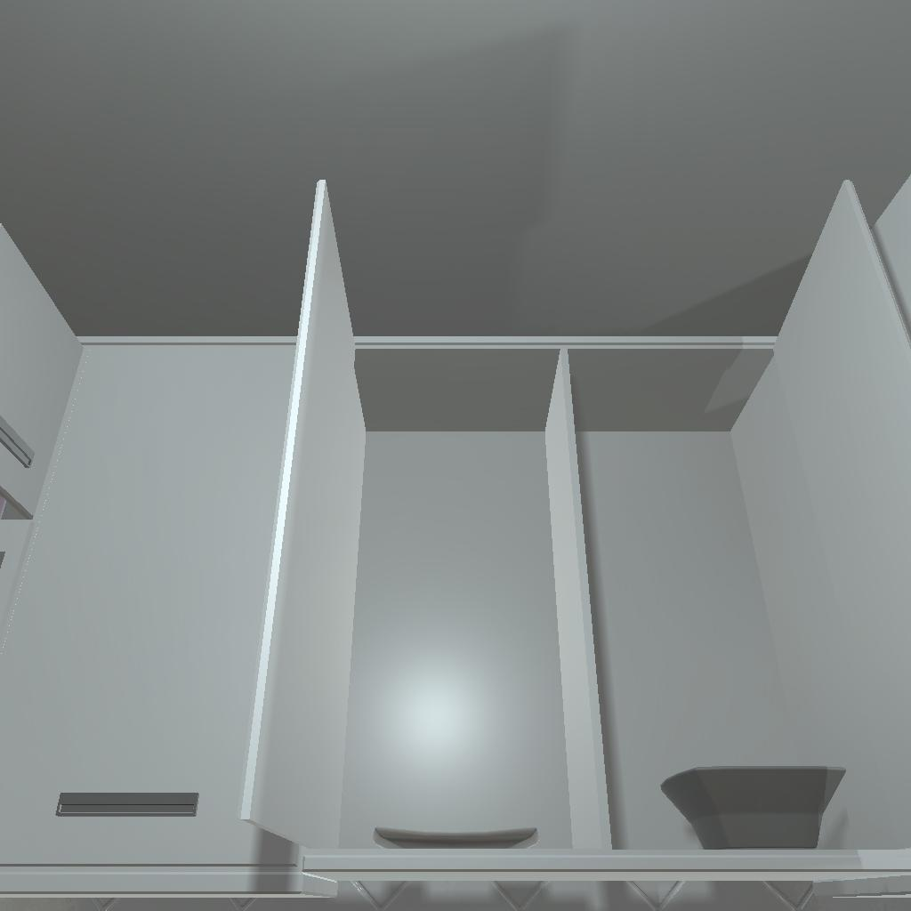

---------------------------------------------------------task: 21---------------------------------------------------------
--------------------------------------------------------------------------------------------------------------------------------------------------------------------
--------------------------------------------------------------------------------------------------------------------------------------------------------------------
Step:--------------------------------------------------------------------------19-------------------------------------------------------------------------------
----------------------------------------
VLM Prompt:
**Task**
Please perform as an embodied AI agent. Our final objective is to heat some cup and put it in countertop. Below is the plan for completing the task, the current observation, alongside historical data and admissible actions for the next step. Please determine the best action for the next step!
**Plan**
Below is a detailed step-by-step plan to complete the task.
1. Find a cup.
2. Pick up the cup.
3. Find a microwave.
4. Heat the cup with the microwave.
5. Find a countertop.
6. Place the heated cup on the countertop.
**Current Observation**
Displayed is an image capturing the current position of the agent.
**History Information**
Displayed are the previous observations with their corresponding actions.
State 1:
1. Step Index in the Plan: 1
2. Objects: Sink
3. Action: go to cabinet 1
State 2:
1. Step Index in the Plan: 1
2. Objects: Closed Cabinet
3. Action: open cabinet 1
State 3:
2. Step Index in the Plan: 2
3. Objects: Plate, Shelf, Open Cabinet
4. Action: go to cabinet 3
State 4:
1. Step Index in the Plan: 2
2. Objects: Open Cabinet, Plate
3. Action: go to cabinet 2
State 5:
1. Step Index in the Plan: 2
2. Objects: Cabinet, Plate
3. Action: go to cabinet 4
State 6:
2. Step Index in the Plan: 2
3. Objects: Closed Cabinet
4. Action: go to cabinet 5
State 7:
1. Step Index in the Plan: 2
2. Objects: Closed Cabinet
3. Action: open cabinet 5
State 8:
1. Step Index in the Plan: 2
2. Objects: Closed Cabinet (cabinet 5)
3. Action: take nothing from cabinet 5
State 9:
2. Step Index in the Plan: 2
3. Objects: Closed Cabinet (cabinet 6)
4. Action: go to cabinet 6
State 10:
1. Step Index in the Plan: 1
2. Objects: Various Cabinets (1, 3, 2, 4, 5, 6)
3. Action: open cabinet 6
State 11:
2. Step Index in the Plan: 2
3. Objects: Cabinets (1, 3, 2, 4, 5, 6), Open Cabinet
4. Action: go to cabinet 4
State 12:
1. Step Index in the Plan: 1
2. Objects: Cabinet
3. Action: open cabinet 4
State 13:
1. Step Index in the Plan: 1
2. Objects: Cabinet, Salt Shaker
3. Action: go to cabinet 3
State 14:
2. Step Index in the Plan: 2
3. Objects: Open Cabinet, Plate
4. Action: open cabinet 3
State 15:
1. Step Index in the Plan: 2
2. Objects: Cabinet, Plate
3. Action: go to cabinet 4
State 16:
2. Step Index in the Plan: 2
3. Objects: Cabinet 4, Salt Shaker
4. Action: go to cabinet 6
State 17:
1. Step Index in the Plan: 1
2. Objects: Closed Cabinet (cabinet 6)
3. Action: open cabinet 6
State 18:
1. Step Index in the Plan: 2
2. Objects: Empty Shelf, Bowl
3. Action: go to cabinet 3
State 19:
1. Step Index in the Plan: 2
2. Objects: Empty Shelf, Bowl
3. Action: go to cabinet 4
**Admissible Actions**
(1): go to cabinet 1
(2): go to cabinet 2
(3): go to cabinet 3
(4): go to microwave 1
(5): go to cabinet 4
(6): go to cabinet 5
(7): go to countertop 1
(8): go to coffeemachine 1
(9): go to toaster 1
(10): go to countertop 2
(11): go to sink 1
(12): go to sinkbasin 1
(13): go to fridge 1
(14): close cabinet 6
(15): take bowl 1 from cabinet 6
(16): take plate 1 from cabinet 6
(17): take soapbottle 1 from cabinet 6
**Analysis Guideline**
1. Analyze the history and current observation, and then determine our current step in the plan and our current place.
2. List all visible objects related to the task in the current observation, without summarizing any as "various items."
3. Analyze the objects in the current observation based on the history and the requirements for the current step, and then determine if we can complete the step with the current observation.
4. Analyze and decide on the most appropriate action to take.
5. Summarize the analysis using the following format: "Analysis: [The summarization of the analysis], The Most Appropriate Action: (i which is the integer.): [Selected action]"
**Notes**
1. We must complete each step of the plan in order and cannot skip steps when the previous ones are not finished.
2. For "Go to" actions listed as "go to xxx [n]", interpret this as there are n distinct actions available: "go to xxx 1", "go to xxx 2", ..., "go to xxx n". Select one specific action from these options instead of using "go to xxx [n]".
3. If receptacles such as drawers, cabinets, and so forth are closed in the current observation, we may try to open them.
4. Pay attention to synonyms and ensure clarity in the terms used.
5. We must determine and provide the single action which must be in the **Admissible Actions**.
6. If there is no history available, we are at the first step and the current place is "Unknown".
**Answer**
Please select the most suitable action by following the **Analysis Guideline**, keeping the above **Notes** in mind.
----------------------------------------
----------------------------------------
VLM Response:
Analysis: According to the historical data, the agent has been searching for a cup and has opened and checked various cabinets (cabinet 1, 3, 4, 5, and 6) but has not found a cup yet. The current observation shows an image with an open cabinet with a visible plate. The agent is still at step 1 of the plan, which is to find a cup. Since the image shows an open cabinet but no cup, it is clear that we cannot complete this step based on the current observation. The most appropriate action now is to continue searching for a cup by going to another cabinet.
The Most Appropriate Action: (2): go to cabinet 2
----------------------------------------
----------------------------------------
>>> Refine VLM Response and Get Pure Action: go to cabinet 2
----------------------------------------
-----------------------------------------------------------------
Running time: 6.142926931381226 seconds
Total Money: 0
-----------------------------------------------------------------
-----------------------------------------------------------------
Summarization Prompt:
**Context**
Analysis: Since there is no history information, we are at the first step in the plan, which is to find a statue. The current place is unknown. In the current observation, we see a floorlamp next to an armchair with a small table that has a small object on it, which could potentially be the statue we are looking for. Since the plan requires us to find a statue first and it appears there might be one on the table next to the armchair, we should investigate this object to determine if it is the statue we need.
The Most Appropriate Action: (1): go to armchair 1
**Summary**
1. Step Index in the Plan: 1
2. Objects: Floorlamp, Armchair, Small Table, Small Object (potential statue)
3. Action: go to armchair 1
**Context**
Analysis: According to the historical data, the agent has been searching for a cup and has opened and checked various cabinets (cabinet 1, 3, 4, 5, and 6) but has not found a cup yet. The current observation shows an image with an open cabinet with a visible plate. The agent is still at step 1 of the plan, which is to find a cup. Since the image shows an open cabinet but no cup, it is clear that we cannot complete this step based on the current observation. The most appropriate action now is to continue searching for a cup by going to another cabinet.
The Most Appropriate Action: (2): go to cabinet 2
Please summarize the context by following above examples when providing the summary, and ensure that only the summary is included, without any extra explanation.
**Summary**
-----------------------------------------------------------------
-----------------------------------------------------------------
Summarization Response:
1. Step Index in the Plan: 1
2. Objects: Cabinet 1, 3, 4, 5, 6 (opened and checked), Plate (visible)
3. Action: go to cabinet 2
-----------------------------------------------------------------
-----------------------------------------------------------------
Text Observation:You arrive at loc 1. The cabinet 2 is closed.
-----------------------------------------------------------------
UNSUCCEED